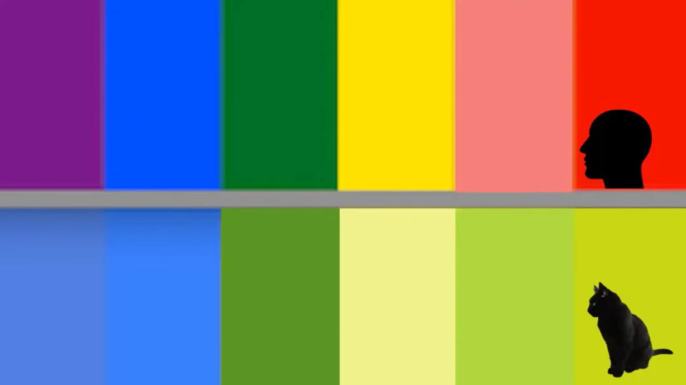
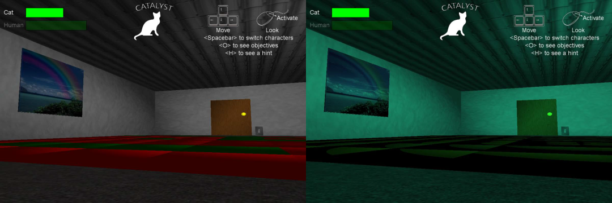

猫猫眼中的红不是红 猫猫眼中的绿是什么绿？

人类是杂食动物。祖先除了需要打猎之外，还需要采集大量的植物、浆果，活动时间也主要集中白天，光线明亮时时。因此，对于人类来说，通过颜色辨别食物的能力非常重要。
而野外生活的猫咪，捕捉猎物的时间主要在傍晚以后，不太需要通过颜色去辨别猎物，所以，视觉的重点主要集中在夜视及捕捉移动物体上。
我们和猫咪都有两种光感受细胞：视锥细胞与视杆细胞。
视锥细胞主要负责感受强光和颜色；视杆细胞主要负责感受弱光刺激。
我们人类通常拥有三种类型的视锥细胞，可以识别出三种原色组合出来的各种颜色，可见光的波长范围大概是780～400nm。而猫咪只有两种类型的视椎细胞（有研究人员提出或许有第三种，但很少），可见光的波长范围大概只有 450 nm~556 nm。
这就导致了猫咪在区分更长波长的红色时，可能只能根据亮度区分，无法看到真正意义上的红色（但猫咪可以分辨“红”、“绿”）。
同时，由于视锥细胞数量的差异：
猫视锥细胞：每平方毫米26,000
人视锥细胞：每平方毫米146,000


图源：ZoneA
左：人类视野 右：猫咪视野
图源：Catalyst
图源：ZoneA
导致猫眼中看到的颜色与我们眼中看到的颜色，饱和度也有很大的区别，猫眼中看到的饱和度会更低。
没有橙、红等波长较长的颜色；蓝、绿色饱和度也更低；就是我们和猫咪在颜色视觉上的最主要的差异。
*内容节选自微信公众号（这里插入wechat图标后有个怎么也消不掉的空格→）猫研所《猫咪究竟能看到哪些颜色？又最喜欢什么颜色？》本网站仅作学习交流使用，本篇标题为网站作者自拟。